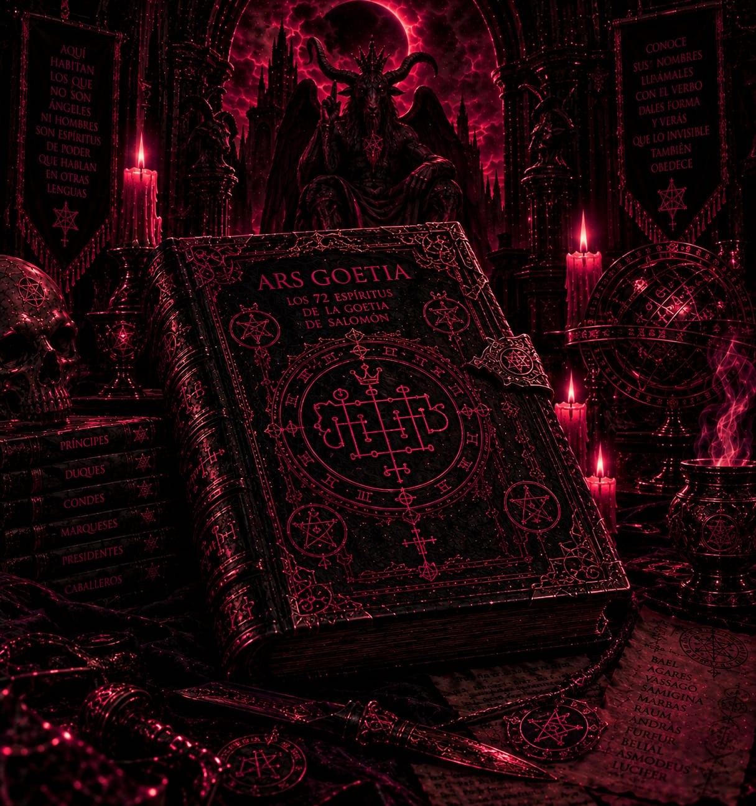

LOS SELLOS Y SIGILOS
Cada espíritu posee un sello particular dentro de la tradición de la Ars Goetia. Estos diseños funcionan como marcas identificativas y forman parte del lenguaje gráfico del manuscrito.
ARCHIVO III · GRIMORIOS · REGISTRO 03
EL CATÁLOGO DE LOS SETENTA Y DOS ESPÍRITUS
La Ars Goetia es la primera parte del Lemegeton, una obra de magia ceremonial que reúne descripciones de setenta y dos espíritus, sus jerarquías y sus representaciones simbólicas. Su historia combina tradiciones anteriores con la literatura esotérica europea de la Edad Moderna.
EXPLORAR HISTORIA VOLVER AL ARCHIVO